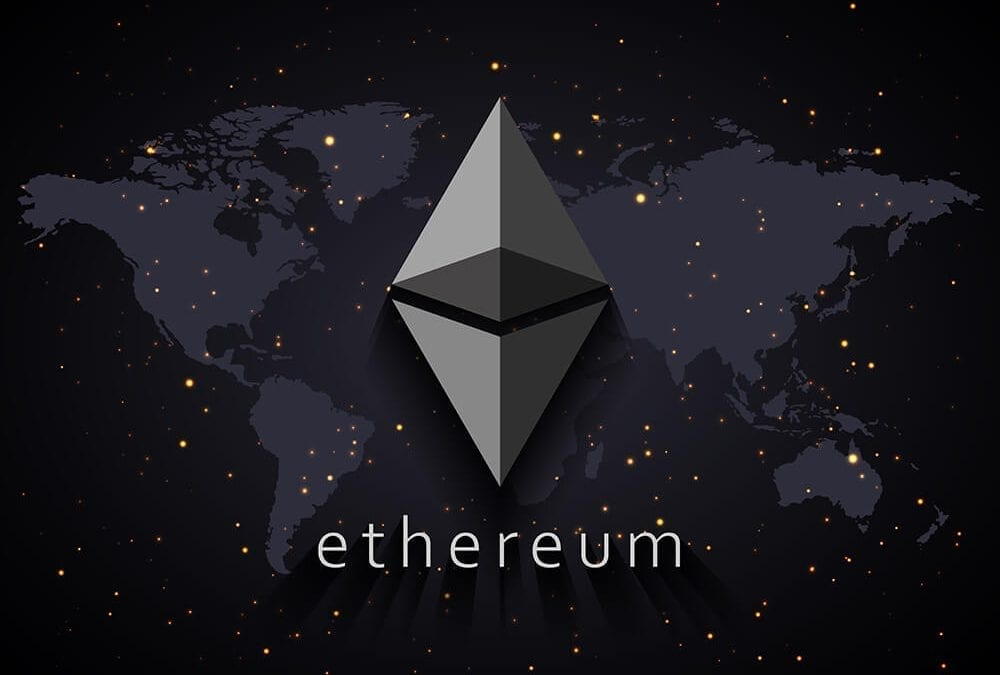

About Me

Understanding Ethereum
The applications run on Ethereum are run on a platform-specific cryptographic token, ether. During 2014, Ethereum had launched a pre-sale for ether which had received an overwhelming response. Ether is like a vehicle for moving around on the Ethereum platform and is mostly sought by developers looking to develop and run applications inside Ethereum. Ether is used broadly for two purposes: it is traded as a digital currency exchange like other cryptocurrencies, and it is used inside Ethereum to run applications and even to monetize work.
According to Ethereum, it can be used to “codify, decentralize, secure, and trade just about anything.” One of the big projects around Ethereum is Microsoft’s partnership with ConsenSys which offers “Ethereum Blockchain as a Service (EBaaS) on Microsoft Azure so Enterprise clients and developers can have a single click cloud-based blockchain developer environment.”
In 2016, Ethereum was split into two separate blockchains, Ethereum, and Ethereum Classic, after a malicious actor stole more than $50 million worth of funds which had been raised on the DAO, a set of smart contracts originating from Ethereum's software platform. The new Ethereum was a hard fork from the original software intended to protect against further malware attacks. As of September 2019, Ethereum was the second-largest virtual currency on the market, behind only Bitcoin. It is much faster to acquire ether currency than bitcoin (about 14 or 15 seconds to bitcoin's near-uniform 10 minutes), and there are far more ether units in circulation than there is bitcoin.
Connect with Me